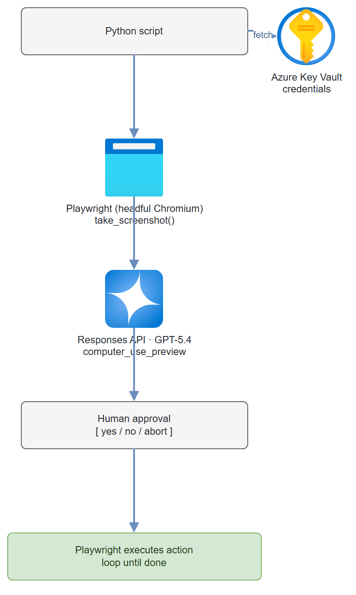

Build it yourself. This project is part of the AI Projects for Cloud Solution Architects portfolio. Full source, code, and the latest updates live in the csa-ai-projects repo on GitHub.
GPT-5.4's computer-use capability lets you point a model at a screenshot and say "fill in this form." This guide builds the agent loop: screenshot → model decides action → Playwright executes → repeat — with a safety confirmation step before every click.
What You're Building
A Python agent loop using Playwright for browser automation. The agent takes a screenshot, sends it to GPT-5.4 via the Responses API (computer-use tool), receives an action (click, type, scroll, key), asks you to confirm before executing, then repeats. Credentials are stored in Azure Key Vault — never in code. This is genuinely powerful and genuinely dangerous without the confirmation step.
Prerequisites
- Microsoft Foundry / Azure AI Services resource with GPT-5.4 deployed (computer-use requires GPT-5.4 or higher)
- Azure Key Vault for credential storage
- Azure CLI logged in (
az login) with Cognitive Services OpenAI User on the AI Services resource and Key Vault Secrets User on the vault - Python 3.11+
playwright,openai,azure-keyvault-secrets,azure-identity,Pillow
pip install "openai>=1.30.0" azure-identity azure-keyvault-secrets \
playwright Pillow python-dotenv
# Install Playwright browsers
playwright install chromium
Safety warning: Computer-use agents can take irreversible actions — form submissions, file deletions, purchases. Never run without the confirmation step in production. Add a dry-run mode for testing.
Architecture

Step-by-Step Build
Step 1 — Store credentials in Key Vault
KV_NAME="computer-use-kv"
az keyvault create \
--name $KV_NAME \
--resource-group $RG \
--location eastus2 \
--enable-rbac-authorization true
# Grant yourself Secret Officer role
az role assignment create \
--assignee $(az ad signed-in-user show --query id -o tsv) \
--role "Key Vault Secrets Officer" \
--scope $(az keyvault show --name $KV_NAME --query id -o tsv)
# Store credentials (never hardcode these)
az keyvault secret set --vault-name $KV_NAME --name "target-username" --value "your-username"
az keyvault secret set --vault-name $KV_NAME --name "target-password" --value "your-password"
Step 2 — Key Vault helper
# keyvault.py
import os
from functools import lru_cache
from azure.keyvault.secrets import SecretClient
from azure.identity import DefaultAzureCredential
@lru_cache(maxsize=None)
def get_secret(secret_name: str) -> str:
"""Fetch a secret from Key Vault. Cached after first fetch."""
kv_url = f"https://{os.environ['KEY_VAULT_NAME']}.vault.azure.net"
client = SecretClient(vault_url=kv_url, credential=DefaultAzureCredential())
return client.get_secret(secret_name).value
Step 3 — Playwright screenshot helper
# browser.py
import asyncio
import base64
import io
from PIL import Image
from playwright.async_api import async_playwright, Page, Browser
_browser: Browser | None = None
_page: Page | None = None
async def init_browser(headless: bool = False) -> Page:
"""Launch Chromium and return a page. headless=False lets you watch."""
global _browser, _page
pw = await async_playwright().start()
_browser = await pw.chromium.launch(
headless=headless,
args=["--window-size=1280,800"]
)
context = await _browser.new_context(
viewport={"width": 1280, "height": 800}
)
_page = await context.new_page()
return _page
async def take_screenshot(page: Page) -> tuple[bytes, str]:
"""Take screenshot, return (PNG bytes, base64 string)."""
png_bytes = await page.screenshot(type="png")
b64 = base64.b64encode(png_bytes).decode()
return png_bytes, b64
async def execute_action(page: Page, action) -> str:
"""Execute a computer-use action (Responses API schema) on the Playwright page.
`action` is the object from a `computer_call` output item — its `.type`
is one of click/double_click/type/keypress/scroll/move/wait/screenshot.
"""
action_type = getattr(action, "type", None)
if action_type == "click":
button = getattr(action, "button", "left")
await page.mouse.click(action.x, action.y, button=button)
return f"Clicked {button} at ({action.x}, {action.y})"
elif action_type == "double_click":
await page.mouse.dblclick(action.x, action.y)
return f"Double-clicked at ({action.x}, {action.y})"
elif action_type == "type":
await page.keyboard.type(action.text, delay=50)
return f"Typed: {action.text[:50]}..."
elif action_type == "keypress":
# action.keys is a list of key names, e.g. ["CTRL", "A"]
keys = "+".join(action.keys)
await page.keyboard.press(keys)
return f"Pressed key: {keys}"
elif action_type == "scroll":
await page.mouse.move(action.x, action.y)
await page.mouse.wheel(
getattr(action, "scroll_x", 0), getattr(action, "scroll_y", 0))
return f"Scrolled ({action.scroll_x}, {action.scroll_y}) at ({action.x}, {action.y})"
elif action_type == "move":
await page.mouse.move(action.x, action.y)
return f"Moved to ({action.x}, {action.y})"
elif action_type in ("wait", "screenshot"):
return f"{action_type} (no page mutation)"
else:
return f"Unknown action type: {action_type}"
Step 4 — The agent loop
# agent_loop.py
import os
import json
import asyncio
from dotenv import load_dotenv
from azure.identity import DefaultAzureCredential, get_bearer_token_provider
from openai import AzureOpenAI
from browser import init_browser, take_screenshot, execute_action
load_dotenv()
client = AzureOpenAI(
azure_endpoint=os.environ["AZURE_OPENAI_ENDPOINT"],
azure_ad_token_provider=get_bearer_token_provider(
DefaultAzureCredential(), "https://cognitiveservices.azure.com/.default"),
api_version="2025-04-01-preview",
)
MODEL = os.environ.get("COMPUTER_USE_MODEL", "gpt-5.4")
COMPUTER_TOOL = [{
"type": "computer_use_preview",
"display_width": 1280,
"display_height": 800,
"environment": "browser",
}]
async def run_computer_use_agent(
task: str,
start_url: str,
max_steps: int = 20,
require_confirmation: bool = True
) -> dict:
"""
Main agent loop: screenshot → GPT-5.4 → computer_call → confirm → execute → repeat.
Uses the Responses API computer-use loop: each turn replies to the prior
response with a `computer_call_output` containing a fresh screenshot.
"""
page = await init_browser(headless=False) # headless=False so you can watch
await page.goto(start_url)
await page.wait_for_load_state("networkidle")
print(f"\nTask: {task}")
print(f"Starting at: {start_url}")
print("-" * 60)
# First request: the task plus an initial screenshot.
_, screenshot_b64 = await take_screenshot(page)
response = client.responses.create(
model=MODEL,
tools=COMPUTER_TOOL,
input=[{
"role": "user",
"content": [
{"type": "input_text", "text": task},
{"type": "input_image",
"image_url": f"data:image/png;base64,{screenshot_b64}"},
],
}],
truncation="auto",
)
step = 0
actions_taken = []
final_text = ""
while step < max_steps:
# The model returns text (reasoning) and at most one computer_call per turn.
final_text = response.output_text or final_text
computer_calls = [it for it in response.output
if getattr(it, "type", None) == "computer_call"]
if not computer_calls:
print(f"\nAgent complete: {final_text}")
break
step += 1
call = computer_calls[0]
action = call.action
action_dict = action.model_dump() if hasattr(action, "model_dump") else action
print(f"\nStep {step}/{max_steps}")
print(f"Proposed action: {json.dumps(action_dict, indent=2)}")
# Confirmation step — never skip this in production
if require_confirmation:
choice = input("\nExecute this action? [y/n/abort] ").strip().lower()
if choice == "abort":
print("Aborted by user.")
break
elif choice != "y":
print("Skipping action.")
response = client.responses.create(
model=MODEL,
previous_response_id=response.id,
tools=COMPUTER_TOOL,
input=[{"role": "user",
"content": "That action was rejected. Try a different approach."}],
truncation="auto",
)
continue
# Execute the action, then capture the resulting screen
result = await execute_action(page, action)
print(f"Executed: {result}")
actions_taken.append({"step": step, "action": action_dict, "result": result})
await asyncio.sleep(1)
try:
await page.wait_for_load_state("networkidle", timeout=3000)
except Exception:
pass # Page might not have navigated
_, screenshot_b64 = await take_screenshot(page)
# Reply to the computer_call with a screenshot of the new state.
# Acknowledge any pending safety checks the model raised.
response = client.responses.create(
model=MODEL,
previous_response_id=response.id,
tools=COMPUTER_TOOL,
input=[{
"type": "computer_call_output",
"call_id": call.call_id,
"acknowledged_safety_checks": [
{"id": sc.id, "code": sc.code, "message": sc.message}
for sc in (call.pending_safety_checks or [])
],
"output": {
"type": "computer_screenshot",
"image_url": f"data:image/png;base64,{screenshot_b64}",
},
}],
truncation="auto",
)
return {
"steps_taken": step,
"actions": actions_taken,
"final_text": final_text,
}
Step 5 — Example: automated form fill
# main.py
import asyncio
from keyvault import get_secret
from agent_loop import run_computer_use_agent
async def main():
# Example: fill a standard web form
# Credentials come from Key Vault — not hardcoded
username = get_secret("target-username")
task = (
f"Log into the portal using username '{username}'. "
"The password is in the password field. "
"After login, navigate to Settings → Profile and update "
"the phone number to '555-0123'. Click Save. "
"Confirm the change was saved successfully."
)
result = await run_computer_use_agent(
task=task,
start_url="https://your-internal-portal.example.com",
max_steps=15,
require_confirmation=True # Never set to False without careful review
)
print(f"\nCompleted in {result['steps_taken']} steps")
print(f"Actions taken: {len(result['actions'])}")
if __name__ == "__main__":
asyncio.run(main())
python main.py
Test It
Start with a safe public site to validate the loop works before touching anything real:
# Safe test: navigate Wikipedia
import asyncio
result = asyncio.run(run_computer_use_agent(
task="Go to Wikipedia and search for 'Azure AI Foundry'. Tell me the first paragraph of the article.",
start_url="https://www.wikipedia.org",
max_steps=5,
require_confirmation=True
))
Verify the confirmation step works: The agent should pause and ask [y/n/abort] before every action. If it doesn't, check that require_confirmation=True is set.
Common Mistakes
- Driving computer-use like Chat Completions. The Responses API computer-use loop isn't a growing
messagesarray withrole: toolresults. Each turn replies to the prior response viaprevious_response_idwith a singlecomputer_call_outputitem whoseoutputis a{"type": "computer_screenshot", "image_url": ...}. Parse actions fromcomputer_calloutput items (notcomputer_use/text), and read the action fields directly (action.type,action.x/y,action.text,action.keys) — there's nocoordinatetuple. - Ignoring pending safety checks. A
computer_callmay carrypending_safety_checks; echo them back inacknowledged_safety_checkson thecomputer_call_output(after your human confirmation) or the model will refuse to continue. - Running headless in production. Always run
headless=Falseduring development so you can see what the agent is doing. Switch to headless only after extensive testing. - Credentials in the task string. Never put actual passwords in the task description — it ends up in model context and logs. Use Key Vault to fetch them and inject only at execution time.
- Agent loops infinitely. Always set a
max_stepslimit. 20 is a reasonable default. Add a hard timeout as a second safety net. - Screenshot quality. If the model misidentifies elements, increase the viewport (1920x1080) and ensure DPI scaling is disabled in headless mode.
Extend It
- Audit trail: Log every screenshot and action to Azure Blob Storage. This gives you a full audit trail for compliance and debugging.
- Parallel browser sessions: Run multiple agent instances in parallel for batch processing (e.g., update 100 records across a legacy system overnight).
- Error recovery: Detect when the agent is stuck (same screenshot for 3 consecutive steps) and inject a recovery message: "You appear to be stuck. Try navigating to the home page and starting over."